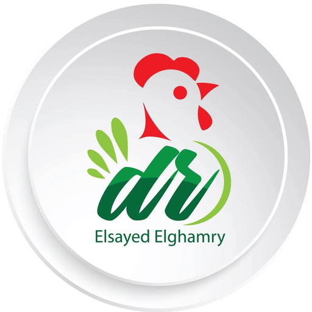

🐔 كراسات المزرعة الذكية
من مركز د. السيد الغمري لأمراض الدواجن والأرانب
كراسات متابعة المزارع المجانية
سجّل بيانات قطيعك يوميًا — حتى بدون إنترنت.
📱
تعمل على الموبايل
📶
بدون إنترنت
📊
حسابات تلقائية
الكراسة اليومية للعنبر
متابعة الدورة اليومية — علف، نفوق، أوزان، تحصينات
كراسة البياض — تربية وإنتاج
متابعة قطعان البياض من التربية حتى ذروة الإنتاج
كراسة أمهات دواجن التسمين
تغذية مقيّدة، خصوبة وتفريخ، تزاوج طبيعي — معيار Ross308 الرسمي
كراسة بط الأمهات
إنتاج يومي، تفريخ بالدفعة، وصحة قطيع الأمهات
كراسة بط التسمين
متابعة النمو اليومي والأسبوعي حتى التسويق
كراسة رومي الأمهات
تربية منفصلة للذكور والإناث، تلقيح صناعي، وتفريخ
كراسة رومي التسمين
ذكور وإناث منفصلين، سجل يومي وأسبوعي حتى التسويق
💡 نصيحة اليوم
—
تثبيت التطبيق على الشاشة الرئيسية
ℹ️
على آيفون:
اضغط زر المشاركة
⬆️
بالأسفل، ثم اختر
"إضافة إلى الشاشة الرئيسية"
.
شارك التطبيق مع مربي تاني